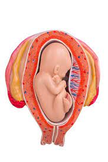

Though each mom-to-be’s body changes in different ways throughout pregnancy, your baby belly might be pretty visible by the time you’re five months pregnant. This month, you’ll likely be adjusting to the physical changes that come with a growing bump and your changing center of gravity. Read on to learn about common pregnancy symptoms at five months, what happens at the mid-pregnancy ultrasound, how your baby is developing, and more!
Here's hoping that you are still enjoying the energy boost that the second trimester is famous for. It's also possible that you’re experiencing some pesky symptoms at five months pregnant. These can include:
Pregnancy weight gain, fluid retention, and the pregnancy hormone relaxin might be causing this symptom. Relaxin loosens the muscles in your body in preparation for childbirth and it also loosens the joints in your feet, making your feet expand. A cool foot bath can help relieve some of the swelling. Putting your feet up might also help.
At five months pregnant, your posture may start to change as you adjust to your growing belly. As your bump grows, your center of gravity shifts. This can cause some strain on your lower back, as your muscles have to work extra hard to support this extra weight and your changing body shape. Try exercises that strengthen your back muscles, and make sure you sit in chairs with good back support — or prop a pillow behind you. If your back pain is causing too much discomfort, get help from your healthcare provider.
As your little one grows, your blood circulation can change, resulting in less blood flow to your head. This can cause that woozy feeling when you stand up or suddenly change positions. Be careful and take things slowly, and avoid being on your feet when you feel dizzy.
Stuffy nose? Nosebleeds? Or maybe a runny nose? These issues can be caused by pregnancy hormone, which can dry out the mucous membranes in your nasal passages. Saline drops might help relieve some of the congestion, and running a humidifier in your bedroom at night can also help.
If you keep losing your keys or can’t remember your phone’s password, don’t worry — this forgetfulness is known to happen during pregnancy. Although it’s not an official medical condition, it’s quite common. Many healthcare providers associate this absentmindedness with hormonal changes, stress, or sleep deprivation. Try making lists or using scheduling apps if you’re worried about forgetting something important.
A bigger bump can make it harder to find a comfortable sleeping position. Try lying on your side with a pillow between your knees and a pillow under your belly for extra support. Regular exercise such as walking, swimming, or prenatal yoga and taking a warm, soothing bath before bed may help you get a better night’s sleep.
It’s possible you’ll start to experience these “practice” contractions this month. These can feel like a mild tightening or a more painful cramping in your abdomen. You’re more likely to feel them later in the day, or after exercise or sex. Sometimes you may be unsure whether what you’re experiencing is Braxton Hicks or real labor contractions. Typically, Braxton Hicks go away if you move or change positions, but if you’re at all uncertain about what you are feeling, contact your healthcare provider.
Your little one might be becoming a little more active this month, with the kicks and flips finally becoming noticeable. Your baby is beginning to sleep and wake up at regular intervals, and she may even be awakened by outside noises, so don’t be surprised if you feel a reaction after a loud sound.
Your little one’s skin begins to produce both vernix and lanugo this month. Vernix is a slick, greasy coating that protects the skin while in the amniotic sac, and it will completely cover her body when she’s born. Lanugo is soft, fine hair that helps hold the vernix in place on the skin. Most of this lanugo will disappear before birth, but some babies are born with small patches on various parts of the body. By the end of this month, your little one may be a thumb sucker, as the sucking reflex starts to kick in in preparation for feeding once born.
Your baby grows from being about 5 inches long and weighing about 5 ounces, to being about 10 inches long and weighing about 1 pound around this month.
All this means, when you’re five months pregnant, your baby’s size is similar to that of a bell pepper or a banana. You’ve both come a long way in five months!
Check out these illustrations for a glimpse at what your baby might look like when you’re five months pregnant:
Most moms-to-be have at least one ultrasound during pregnancy and this usually occurs when you’re five months pregnant, at around 18 to 20 weeks.
At the standard mid-pregnancy ultrasound, your healthcare provider:
Although an ultrasound exam is a medical tool, your healthcare provider may be able to tell you whether you’re having a boy or girl, if this is something you’d like to find out.
Your healthcare provider will be able to tell you whether any other ultrasounds need to be scheduled during your pregnancy. Sometimes additional ultrasounds are needed to check for a specific condition or as part of a medical test.
Speak to your provider if you’re curious about having a more detailed 3D or 4D ultrasound scan
At some point during this month, you may feel your little one move for the first time. This is called quickening, and some moms-to-be detect these sensations around 18 weeks of pregnancy
If this isn’t your first baby, you may start to sense these movements earlier than you did with your first baby because you’re more familiar with the feeling. If you haven’t felt those first flutters yet, try to be patient. It may still be several weeks before your little one’s kicks are noticeable. If you are feeling those flutters, your healthcare provider may soon recommend that you begin doing daily "kick counts." Download our fetal movement tracker, and talk to your provider about when and how to count those little kicks. At your prenatal checkups from five months pregnant onward (if not earlier), your healthcare provider may start checking your belly size by measuring your fundal height. The fundal height is measured in centimeters from your pubic bone to the top of your uterus. Interestingly, your fundal height usually closely corresponds to the number of weeks pregnant you are. So, if you’re 18 weeks pregnant, your fundal height is likely to be around 18 centimeters.
This month fits squarely into the second trimester, but you may be wondering which weeks of pregnancy you’re up to at five months pregnant? There are a few different ways the weeks of pregnancy are grouped into months, so this fifth month could range from week 17 or 18 up to week 20, 21, or 22.